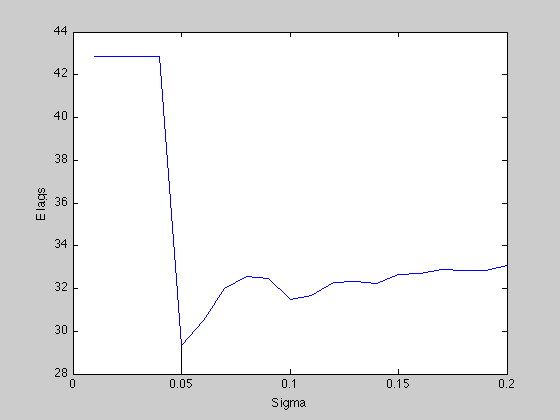
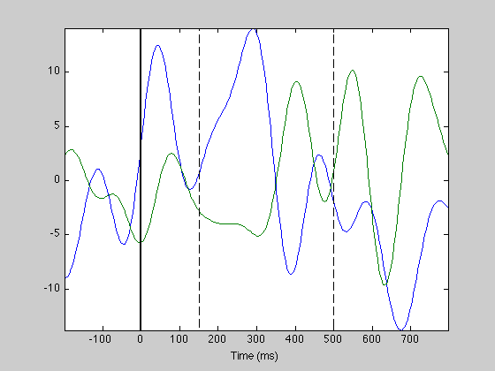
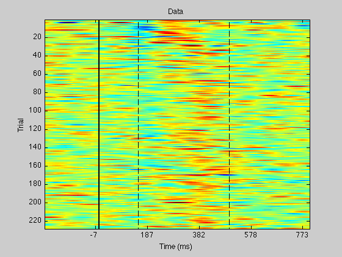
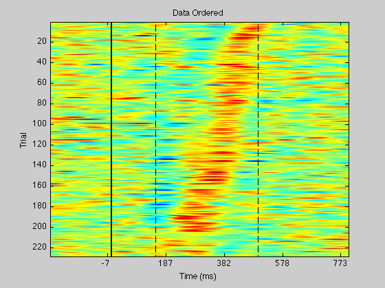
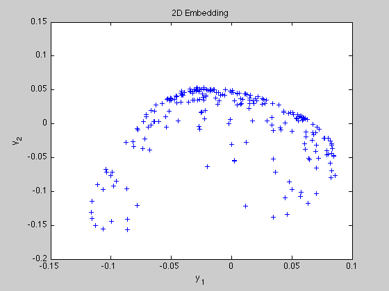
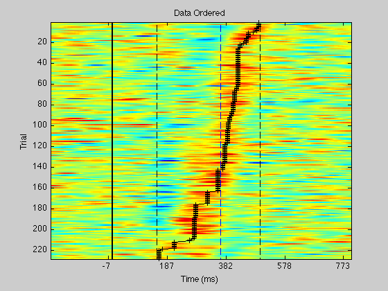
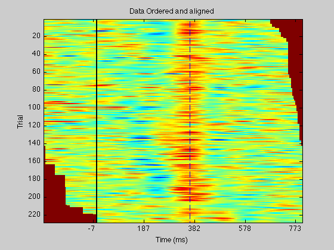
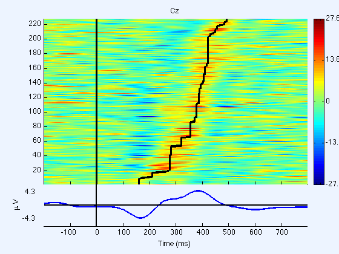
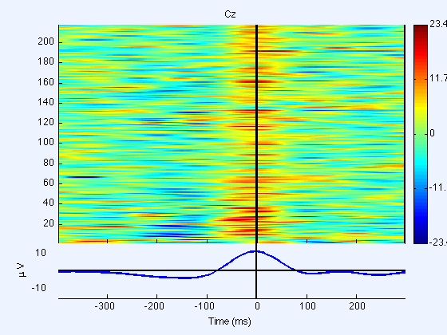

Lag extraction tutorial script
this script runs an EEGLAB plugin used for lag extraction on single trial data.
$Id: lagextraction_tutorial.m 4 2009-08-15 21:10:35Z gramfort $
Contents
Load data
load('data/oddball3-num1-512Hz-chan10.set','-mat');
Set parameters and run lag extraction
use_ica = false; % Set to true, if you want to realign based on an ICA component channel = 1; % Index of channel or ICA component used for realignment time_win = [150 500]; % (ms) : work on this time window bad_trials = []; % set bad trials clear options options.sigma = [0.01:0.01:0.2]; options.alpha = [0.001,0.01,0.1]; options.disp_log = false; [EEG, com, order, lags, event_type, E_lags] = pop_extractlag( EEG , use_ica, channel, time_win, options);
--- Running K Cross Validation (K = 10) - Running lag extraction --- Nb trials : 205 --- Nb time samples : 89 ---------- Using sigma = 0.06 - Running lag extraction --- Nb trials : 205 --- Nb time samples : 89 ---------- Using sigma = 0.06 - Running lag extraction --- Nb trials : 205 --- Nb time samples : 89 ---------- Using sigma = 0.06 - Running lag extraction --- Nb trials : 205 --- Nb time samples : 89 ---------- Using sigma = 0.06 - Running lag extraction --- Nb trials : 205 --- Nb time samples : 89 ---------- Using sigma = 0.06 - Running lag extraction --- Nb trials : 205 --- Nb time samples : 89 ---------- Using sigma = 0.06 - Running lag extraction --- Nb trials : 205 --- Nb time samples : 89 ---------- Using sigma = 0.06 - Running lag extraction --- Nb trials : 205 --- Nb time samples : 89 ---------- Using sigma = 0.06 - Running lag extraction --- Nb trials : 205 --- Nb time samples : 89 ---------- Using sigma = 0.06 - Running lag extraction --- Nb trials : 205 --- Nb time samples : 89 ---------- Using sigma = 0.06 - Running lag extraction --- Nb trials : 204 --- Nb time samples : 89 ---------- Using sigma = 0.05 - Running lag extraction --- Nb trials : 204 --- Nb time samples : 89 ---------- Using sigma = 0.05 - Running lag extraction --- Nb trials : 204 --- Nb time samples : 89 ---------- Using sigma = 0.05 - Running lag extraction --- Nb trials : 204 --- Nb time samples : 89 ---------- Using sigma = 0.05 - Running lag extraction --- Nb trials : 204 --- Nb time samples : 89 ---------- Using sigma = 0.05 - Running lag extraction --- Nb trials : 204 --- Nb time samples : 89 ---------- Using sigma = 0.05 - Running lag extraction --- Nb trials : 204 --- Nb time samples : 89 ---------- Using sigma = 0.05 - Running lag extraction --- Nb trials : 204 --- Nb time samples : 89 ---------- Using sigma = 0.05 - Running lag extraction --- Nb trials : 204 --- Nb time samples : 89 ---------- Using sigma = 0.05 - Running lag extraction --- Nb trials : 204 --- Nb time samples : 89 ---------- Using sigma = 0.05 - Running lag extraction --- Nb trials : 204 --- Nb time samples : 89 ---------- Using sigma = 0.05 - Running lag extraction --- Nb trials : 204 --- Nb time samples : 89 ---------- Using sigma = 0.05 - Running lag extraction --- Nb trials : 204 --- Nb time samples : 89 ---------- Using sigma = 0.05 - Running lag extraction --- Nb trials : 204 --- Nb time samples : 89 ---------- Using sigma = 0.05 - Running lag extraction --- Nb trials : 204 --- Nb time samples : 89 ---------- Using sigma = 0.05 - Running lag extraction --- Nb trials : 204 --- Nb time samples : 89 ---------- Using sigma = 0.05 - Running lag extraction --- Nb trials : 204 --- Nb time samples : 89 ---------- Using sigma = 0.05 - Running lag extraction --- Nb trials : 204 --- Nb time samples : 89 ---------- Using sigma = 0.05 - Running lag extraction --- Nb trials : 204 --- Nb time samples : 89 ---------- Using sigma = 0.05 - Running lag extraction --- Nb trials : 204 --- Nb time samples : 89 ---------- Using sigma = 0.05 - Running lag extraction --- Nb trials : 228 --- Nb time samples : 89 ---------- Using sigma = 0.05 ---------- Using alpha = 0.01 eeg_checkset: recomputing the ICA activation matrix ...








View ERP image reordered
figure;
pop_erpimage(EEG,1, [channel],[],EEG.chanlocs(channel).labels,1,1,{ event_type }, ...
[],'latency' ,'yerplabel','\muV','erp','cbar');
Command executed by pop_erpimage:
erpimage( mean(EEG.data([1], :),1), eeg_getepochevent( EEG, { 'Cz (1) : 150 - 500 ms (max)'},[], 'latency'), linspace(EEG.xmin*1000, EEG.xmax*1000, EEG.pnts), 'Cz', 1, 1 , 'yerplabel', '\muV', 'erp', 'cbar');
Plotting input data as 228 epochs of 256 frames sampled at 256.0 Hz.
Sorting data on input sortvar.
The caxis range will be the sym. abs. data range -> [-27.6138,27.6138].
Data will be plotted between -199.219 and 796.875 ms.
Overplotting sorted sortvar on data.
Plotting the ERP trace below the ERP image
Done.

Re-epoch the data
EEG = pop_epoch( EEG, {event_type}, [-0.4 0.3]);
pop_epoch():228 epochs selected Epoching... Warning: event 1 out of data boundary Warning: event 45 out of data boundary Warning: event 58 out of data boundary Warning: event 60 out of data boundary Warning: event 66 out of data boundary Warning: event 73 out of data boundary Warning: event 105 out of data boundary Warning: event 134 out of data boundary Warning: event 214 out of data boundary Warning: event 223 out of data boundary pop_epoch():218 epochs generated pop_epoch(): time limits have been adjusted to [-0.398 0.301] to fit data points limits eeg_checkset: recomputing the ICA activation matrix ... pop_epoch(): checking epochs for data discontinuity
View ERP image of re-epoched data
figure;
pop_erpimage(EEG,1, [channel],[],EEG.chanlocs(channel).labels,1,1,{},[],'','yerplabel','\muV','erp','cbar');
Command executed by pop_erpimage: erpimage( mean(EEG.data([1], :),1), ones(1, EEG.trials)*EEG.xmax*1000, linspace(EEG.xmin*1000, EEG.xmax*1000, EEG.pnts), 'Cz', 1, 1 , 'yerplabel', '\muV', 'erp', 'cbar'); Plotting input data as 218 epochs of 179 frames sampled at 256.0 Hz. Sorting data on input sortvar. The caxis range will be the sym. abs. data range -> [-23.4057,23.4057]. Data will be plotted between -398.438 and 296.875 ms. Overplotting sorted sortvar on data. Plotting the ERP trace below the ERP image Done.
